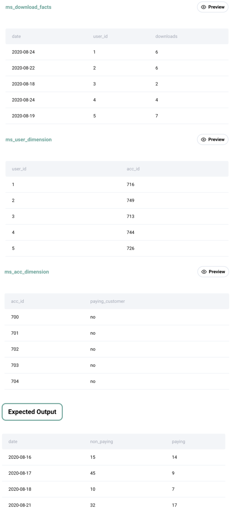

Question sourced from StrataScratch.com.
Database: MySQL
Find the total number of downloads for paying and non-paying users by date. Include only records where non-paying customers have more downloads than paying customers. The output should be sorted by earliest date first and contain 3 columns date, non-paying downloads, paying downloads.

/*
My strategy: Join the ms_download_facts table with the
ms_user_dimension table and the ms_acc_dimension table. Group by
date, and use conditional aggregation twice to derive a column for
the total downloads by paying customers, and a column for total
downloads by non-paying customers. Filter the records where there
are more downloads by non-paying customers than paying customers.
*/
SELECT df.date,
SUM(IF(ad.paying_customer = 'yes', df.downloads, 0)) AS paying_downloads,
SUM(IF(ad.paying_customer = 'no', df.downloads, 0)) AS nonpaying_downloads
FROM ms_download_facts df
JOIN ms_user_dimension ud ON ud.user_id = df.user_id
JOIN ms_acc_dimension ad ON ud.acc_id = ad.acc_id
GROUP BY df.date
HAVING nonpaying_downloads > paying_downloads
ORDER BY df.date;
/*
An alternative (but lengthier) solution using a CTE and CASE statements:
*/
WITH downloads_summary AS (
SELECT df.date,
CASE WHEN ad.paying_customer = 'yes' THEN downloads END AS paying_downloads,
CASE WHEN ad.paying_customer = 'no' THEN downloads END AS nonpaying_downloads
FROM ms_download_facts df
JOIN ms_user_dimension ud ON ud.user_id = df.user_id
JOIN ms_acc_dimension ad ON ud.acc_id = ad.acc_id
)
SELECT date,
SUM(paying_downloads) AS total_paying_downloads,
SUM(nonpaying_downloads) AS total_nonpaying_downloads
FROM downloads_summary
GROUP BY date
HAVING SUM(nonpaying_downloads) > SUM(paying_downloads)
ORDER BY date;